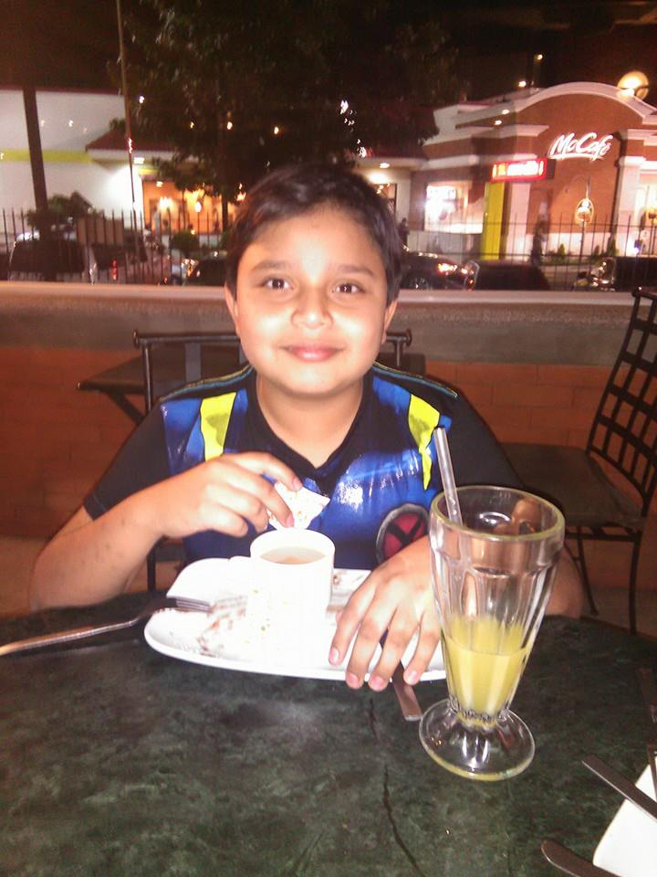
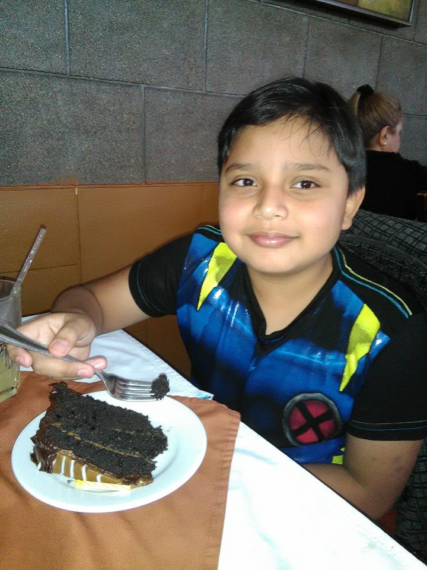

Mi nombre es David Josué André Quiñonez Zeta nací el dia 7 de Diciembre del año 2004, actualmente tengo 18 años, a la edad de 4 años empecé a ir al colegio en el colegio llamado " Colegio El Castillo de Bosque", en este colegio puedo decir que me desarrolle como persona ya que estuve más de la mitad de mi vida en ese colegio, conoci muchas personas que actualmente son muy importantes para mi, tanto como personas que fueron malas en mi vida, estudie en el Colegio El Castillo del Bosque desde el año 2009 hasta el año 2020, sali bien preparado de ese colegio aprendiendo a hacer muchas cosas que en la actualidad me sirven mucho para afrontar los obstaculos que me pone la vida y finalmente en el año 2021 tube el privilegio de entrar al "Colegio Técnico Laboral Kinal" donde actualmente estoy cursando el grado de 6to perito estudiando la carrera de informatica, logre conocer este colegio por mi hermano y desde que lo vi me decidi a entar a Kinal, y esa decicion ha sido de las mejores que he tenido en mi vida, ya que me esta terminando de formar como persona y me esta ayudando para prepararme para la vida laboral
Actualmente a lo que mas le he dedicado tiempo es a mis estudios, haciendo mis tareas a tiempo, estudiando para mejorar cada vez más, también he estado escuchando musica mas seguido para todo, he jugado videjuegos cuando ya he terminado todas mis tareas y actividades del colegio como tambien he visto series y peliculas con mi familia cuando todos estamos desocupados.
Este año espero muchas cosas, como graduarme de diversificado, poder entrar a la universidad, hacer unas muy buenas practicas supervisadas sacar muy buenas notas para poder ir por la beca, terminar el año sin ninguna novedad, convivir más con mi familia e amigos y poder mejorar como persona.